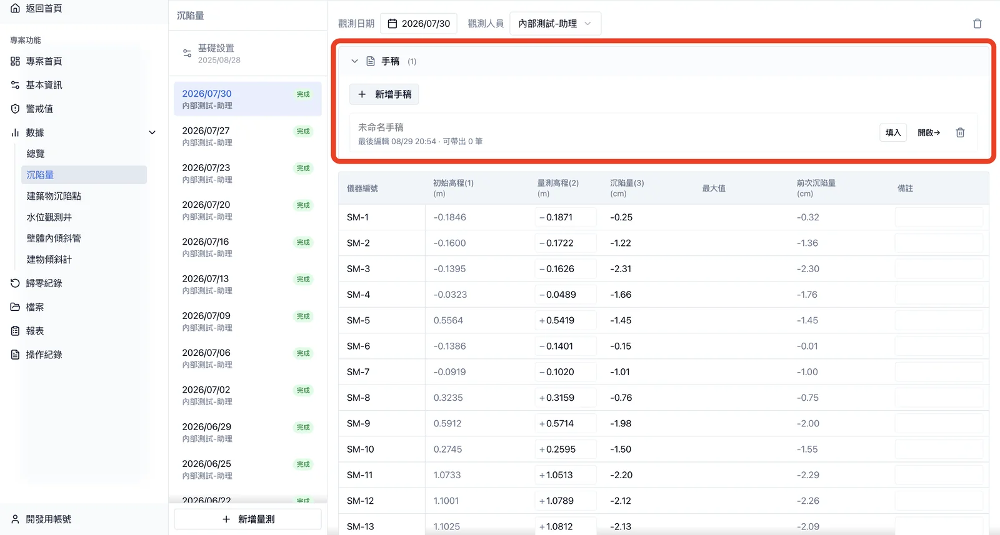
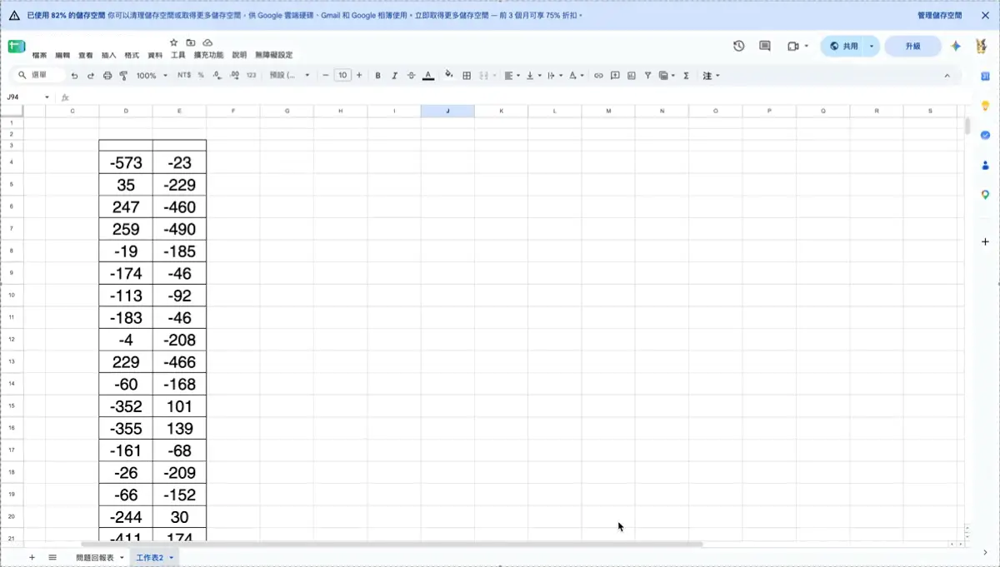
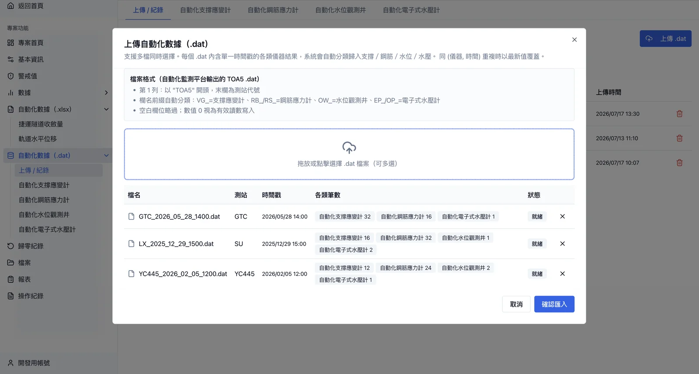
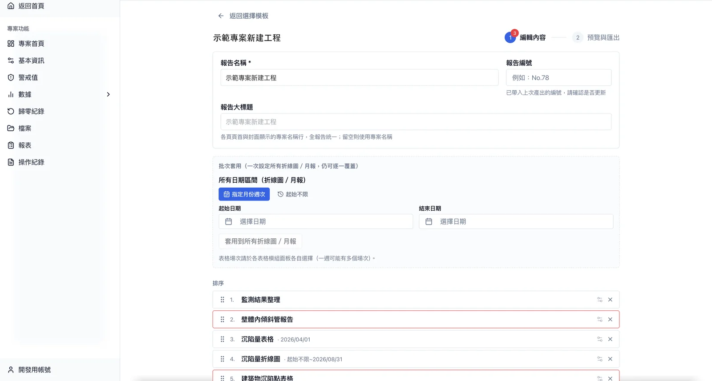
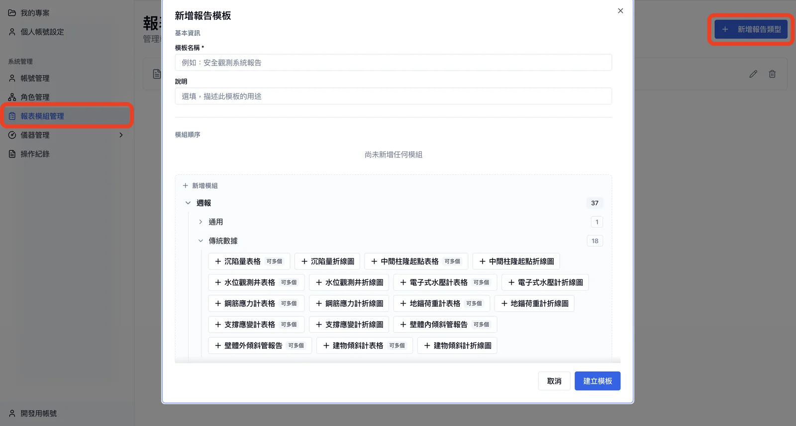
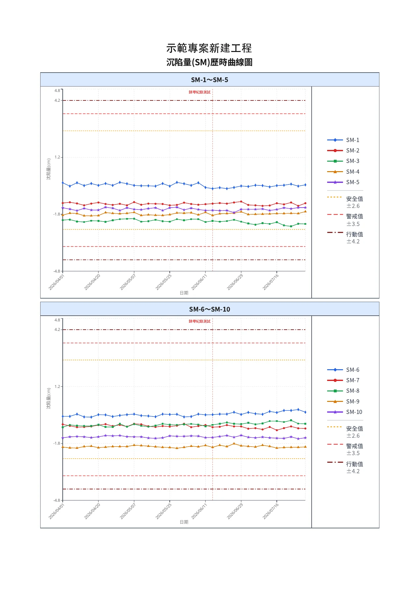
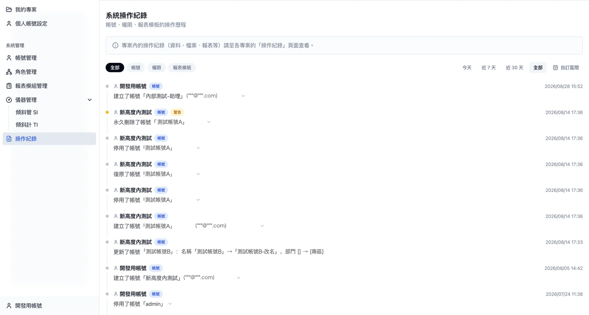

營造監測工程報表管理系統
營造監測顧問公司的內部系統。工程師在工地填量測讀數或上傳儀器輸出檔，系統自動計算沉陷、水位、應力、位移與警戒狀態，並以模板一鍵產出週報、月報 PDF，取代原本散落各處的 Excel 手工流程。
這是什麼
客戶是一家營造監測顧問公司，負責建築工地的安全監測：定期量測沉陷、水位、鋼筋應力、支撐應變、傾斜管等儀器，判斷是否超過警戒值，每週每月出報告給業主。過去整個流程跑在 Excel 上：
| 過去 | 現在 |
|---|---|
| 檔案散在個人電腦與信件，版本對不齊 | 數據集中保存，全專案即時同步 |
| 沉陷量、與前次差值都要自己算、自己核 | 只填量測原始值，計算全部自動 |
| 報告圖表逐張手畫，每人格式不同 | 選模板一鍵產出 PDF，格式統一 |
| 檔案誤刪、覆蓋找不回 | 刪除可復原，每日異地備份 |
| 誰改了哪個數字沒有紀錄 | 每筆填寫與修改都有操作紀錄 |
使用者是公司內的工程師、主任到經理，分 7 種角色。工地端用手機填讀數，辦公室端用電腦產報告。系統涵蓋 16 種監測數據類別：10 種人工填報、6 種從儀器輸出檔自動匯入。
系統長什麼樣
照使用流程排序：填報 → 自動化匯入 → 編輯報告 → PDF 成品 → 操作紀錄。截圖內的專案名與帳號已替換為示範資料。







架構
瀏覽器（手機現場填 / 電腦產報告） │ ▼ Vercel · Next.js ──────── 應用程式本體（無伺服器） │ │ ▼ ▼ Supabase Railway · Gotenberg PostgreSQL 資料庫 常駐的 PDF 轉檔服務 登入 / 檔案 / 即時同步 │ ▼（每日 03:00） GitHub Actions → Cloudflare R2（資料庫備份，保留 90 天）
主體採無伺服器架構，不用自己管機器，流量小時幾乎不花錢。唯一自己跑的常駐服務是 PDF 轉檔：報告可能破百頁，無伺服器平台有執行時間上限、啟動慢、又沒有中文字型，所以把這一段獨立出來。資料庫每天自動備份到另一家雲端，還原流程實際演練過。本機、測試、正式三套環境分離，資料庫結構變更全部版本化。
技術點與設計決策
1. 讀數表做成 Excel 的操作手感
使用者習慣 Excel，一格一格點、一格一格存會被嫌慢。讀數表支援整批複製貼上、滑鼠框選、方向鍵移動，一次貼上幾十格也只儲存一次。十種監測類別各有一張讀數表，但底層共用同一套引擎，新增一種類別只要幾行設定。
2. 多人同時填表，不互相覆蓋
工地手機與辦公室電腦常同時填同一張表。系統即時同步彼此的修改；若兩人改到同一格，明確提示衝突，而不是後存的人默默蓋掉前面的人。
3. 報告模組化，新增儀器類別成本低
報告由 56 種模組組合而成，公司先定好標準模板，各專案再調整。儀器類別多、格式又相近，所以底層做了抽象：新增一種模組只需宣告它的名稱、驗證規則與版型，其餘由系統自動串起來，漏掉任何一處在編譯階段就會報錯。產出的 PDF 是向量格式，業主可以在 Adobe 內再編輯、A3 與 A4 混印不失真。
4. 歷史數據永遠可重現
初始高程、儀器係數日後會被修改或換儀器。若計算時讀「現在的設定」，過去的報告會跟著變。因此建立量測場次時就把當下的設定複製進該場次，之後改設定只影響新場次。監測報告有法律文件性質，過去出過的數字必須能重現。
5. 修正量自動沿用，回頭補填也正確
換儀器後讀數會有固定偏移，使用者只在某一場次填一次修正量，之後的場次自動沿用直到再改。系統只存使用者真正填過的值，顯示與計算時再往前找最近的一筆，所以就算回頭補填舊場次，後面的場次也會跟著更新。
6. 權限集中管理，每筆修改可追溯
7 種角色、11 種權限，誰能看哪些專案、誰能動誰的帳號，規則集中在一處，前後端共用，改規則只改一個地方；沒權限的功能連入口都不顯示。每一筆修改都記錄誰、何時、改了什麼（舊值到新值）、連帶影響了哪些資料，出問題時可追溯、可還原。
7. 自動化數據匯入可預覽、可修改
監測平台輸出三種檔案格式，一檔可能含上萬筆、多類儀器。上傳前先解析預覽並比對重複，由使用者決定覆寫或略過；匯入後仍可在表格中修改、刪除、補列，不必重新上傳。
8. 各專案可自訂單位與名稱，不影響計算
不同案子的單位（mm 或 cm）、小數位數、欄位名稱（警戒值或警示值）不同。系統只在顯示層換算與改名，資料庫永遠存同一種標準格式，計算與警戒判定不受影響。
規模
| 開發期間 | 2026-02 ～ 2026-10（持續中） |
| 程式碼 | 約 10.4 萬行 TypeScript，430 次 commit |
| 資料庫 | 62 張表 |
| 監測數據類別 | 16 種 |
| 報告模組 | 56 種 |
| 使用者角色 | 7 種 |
| 內建使用手冊 | 28 頁 |
我負責的範圍
從頭到尾一個人：跟測量員與經理訪談每種儀器的填報與出報告流程、設計資料模型與架構、前後端開發、部署與維運、寫 28 頁內建使用手冊、兩場共約 60 頁的教育訓練、正式環境切換上線。原始碼為客戶產品，本頁只放截圖與描述。